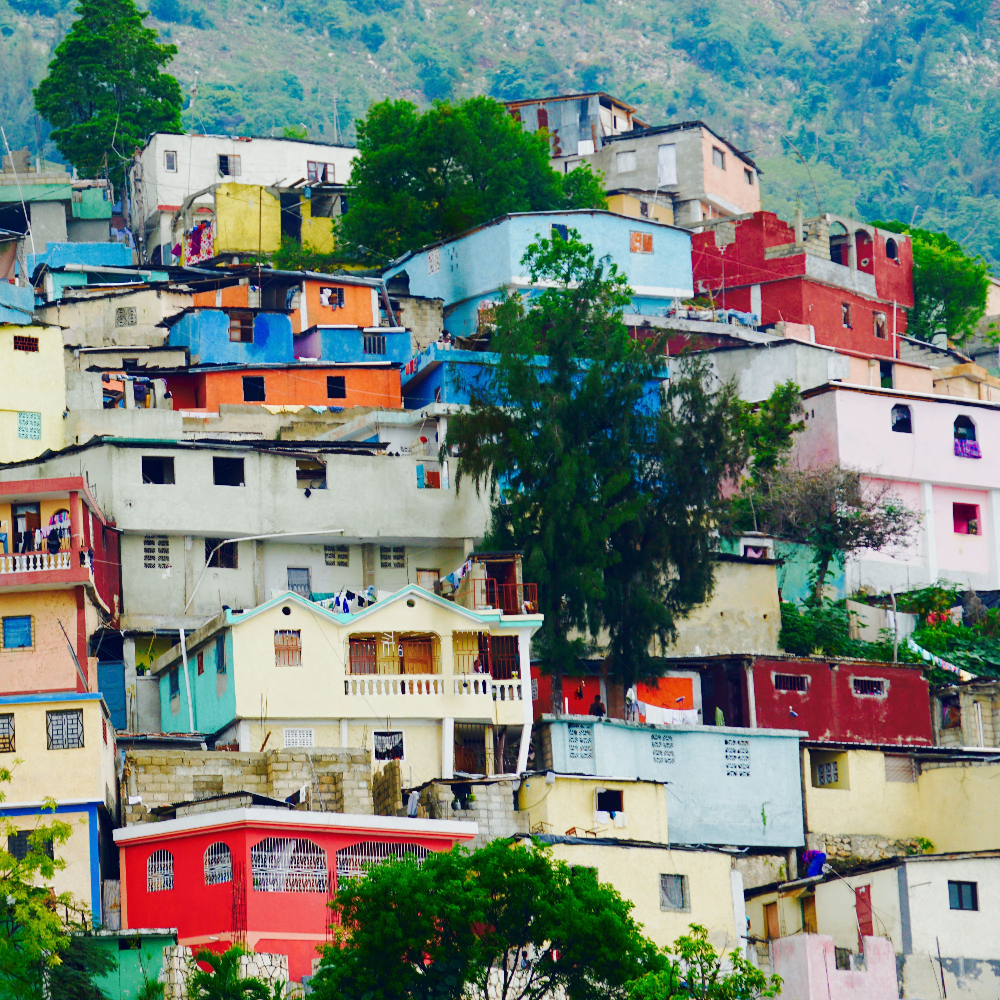
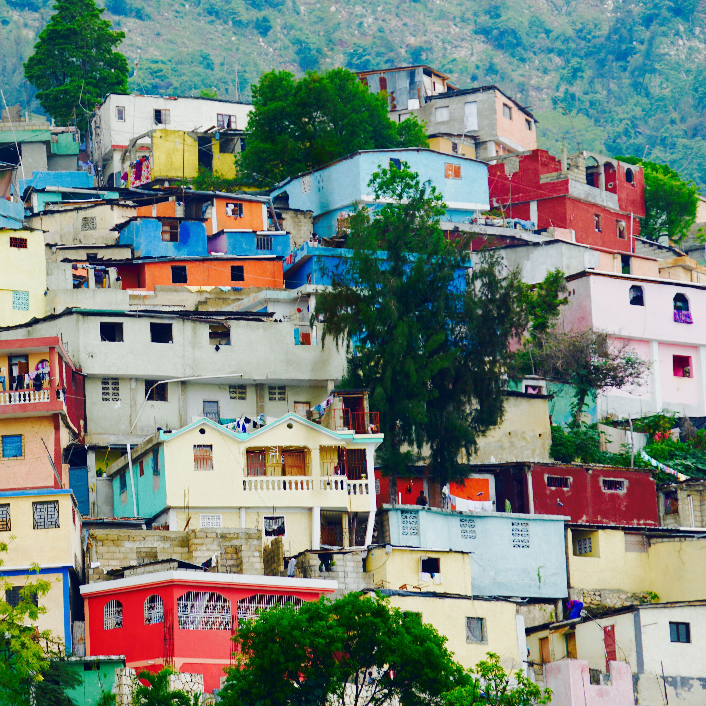

Early Life
I was born in Carrefour, Haiti in 1989. Carrefour is located outside of the capital Port-Au-Price. When I was four my Father took me to live in Thiotte a remote part of Haiti near the mountains. Here, I attended Catholic school walking 10 miles a day. I grew up on a farm/ranch and helped grow coffee beans and tropical fruits. We also raised livestock. After I had finished elementary school, my Father moved to the United States to obtain his citizenship. I was sent back to Carrefour to live with my Auntie and cousins and to attend middle school. Unfortunately, this was a rough time in Haiti’s history. The Country faced unrest due to a controversial President: Jean-Bertrand Aristide. He was removed during a coup d'état, which translates literally to “overthrow” in 2004. This left the country divided and started a civil war. Carrefour was one of the worst areas in Haiti and the people who did not want to overthrow Jean-Bertrand were angry. During this time, No one was able to go to school or to work. The city was lit on fire and many people lost their lives. Jean-Bertrand was taking out of the country by U.S. military and later wrote a letter of resignation to prevent the spilling of more blood. A new president was elected, and the country began to heal. I went back to school and continued my education until I moved to the United States in 2007.
I rejoined my Father in Miami, Florida and finished my senior year of high school in the States learning English as I went. I received a scholarship for soccer and earned a scholarship to a private university. Here I played and earned a bachelor's degree in criminal justice. Unfortunately, the economy in Florida made it hard to find a job, so I moved to North Dakota, where one of my Cousins that I grew up with in Haiti was already living.

 


Present Day Life


I moved to North Dakota, with nothing but a suitcase. I stayed at my Cousins house as I looked for a job and started purchasing the essential. After settling into my new life, I was out at a sports bar with some friends. There was a huge UFC fight on, and the place was packed.The Waitress messed up my order and a year later we were married. Now, we have two cats and a perfect daughter. I am working as a Correctional Officer at the state prison and life couldn’t be more unexpected or any better.